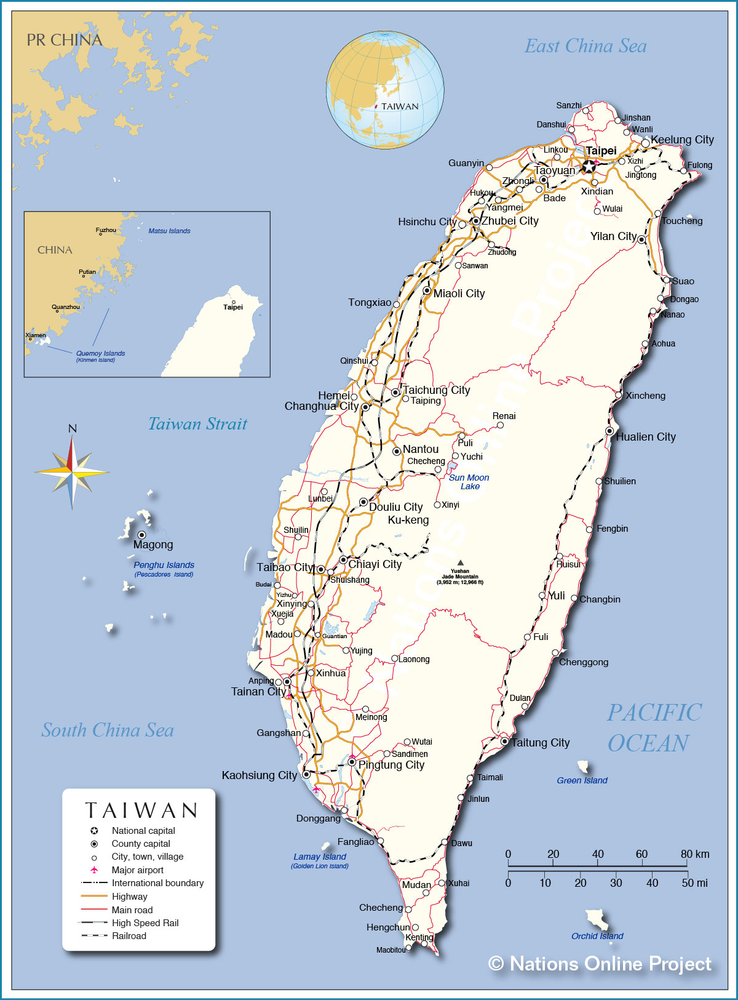

What People are Doing to Slow the Spread
What People are Doing to Slow the Spread
What People are Doing to Slow the Spread

|  |
How Taiwan protect its people from COVID-19?
Be alert and proactive
On Dec. 31, 2019, the same day China notified the World Health Organization that it had several cases of an unknown pneumonia, Taiwan’s Centers for Disease Control immediately ordered inspections of passengers arriving on flights from Wuhan. Taiwan ask and received permission to send a team of expert to China on a fact-finding mission on Jan, 12, 2020. Shortly after the team returned, Taiwan began requiring hospitals to test for and report cases. That help the government identify those infected, trace their contacts and isolate everyone involved, preventing the virus from spreading to the community. All this happened long before Taiwan confirmed its first case on Jan 21. By Jan 20, the Taiwan CDC announced that it hada stockpile of 44 million surgical masks, 1.9 million N95 masks and 1,1oo negative pressure isolation room.
Set up a command center
Taiwan’s CDC activated the Central Epidemic Command Center early on Jan 20, 2020 and that allowed it to quickly roll out a series of epidemic control measures. Taiwan has rapidly produced and implemented a list of at least 124 action items in the first five weeks to protect public health.
The command center not only investigates confirmed and suspected cases, it also works with ministries and local governments to coordinate the response across Taiwan, including allocating funds, mobilizing personnel and advising on the disinfection school and businesses.
Take quick and decisive action
On Jan. 26, Taiwan banned arrivals from Wuhan, earlier than any other country. Not long after, it did the same for fights from China.
Use technology to detect and track cases
After securing its borders, Taiwan used technology to fight virus. Temperature monitors were already set up at airports since the 2003 SARS outbreak to detect anyone with fever.
Passengers can also scan a QR code and report their travel history and health symptoms online. That data is then given directly to Taiwan’s CDC. Those people coming from badly affected areas are put under mandatory 14-day home quarantine, even if they are not sick and are tracked using location sharing on their mobile phone. Absconding can lead to heavy fines. Central Command Center also proactively find new cases by retesting those who tested negative.
Taiwan integrated its national health insurance database with its immigration and customs database to begin the creation of big data for analytics. That allowed them case identification by generating real-time alerts during a clinical visit based on travel history and clinical symptoms.
Ensure availability of supplies
To ensure a steady supply of medical masks, the government quickly banned manufactures from exporting them, implemented a rationing system and set the price at just NT$ 5 each. It also set up new production lines and dispatched soldiers to staff factories, significantly increasing production. Wearing masks helps reduce social panic.
Educate the public
The government also ask public media to announce how the virus is spread, the importances of washing hands properly and when to wear a mask. Residents learned a person’s travel history or contact with infected individuals determined their risk level. That understanding helped reduce discrimination.
Get public buy-in
Regardless of what the government does, people have to take responsibility for their own health. The public’s cooperation with the government’s recommended measures was crucial to prevent the spread of the virus. Schools were provided alcohol disinfectants and temperature guns before the semester started by the government. Every office building, school and community sports center check temperatures and prevent anyone with a fever from entering. Apartment buildings also place hand sanitizer inside or outside elevator.
Learn from experience
Taiwan has learned the lessons during the SARS outbreak in 2003. Taiwan’s health insurance lets everyone not to be afraid of to go to the hospital. If the person suspect to have coronavirus, the person won’t have to worry that can’t afford the hospital visit to get tested. The test is free. If the person is forced to be isolated, during the 14 days, the government will provide food, lodging and medical care.
Incubation Period◀ What People are Doing to Slow the Spread ▶ About Us